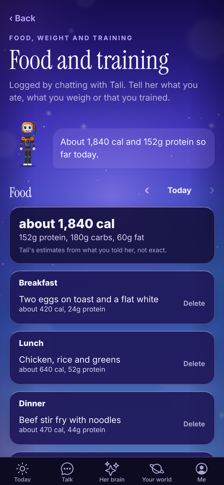
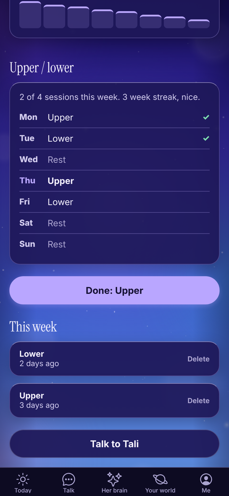
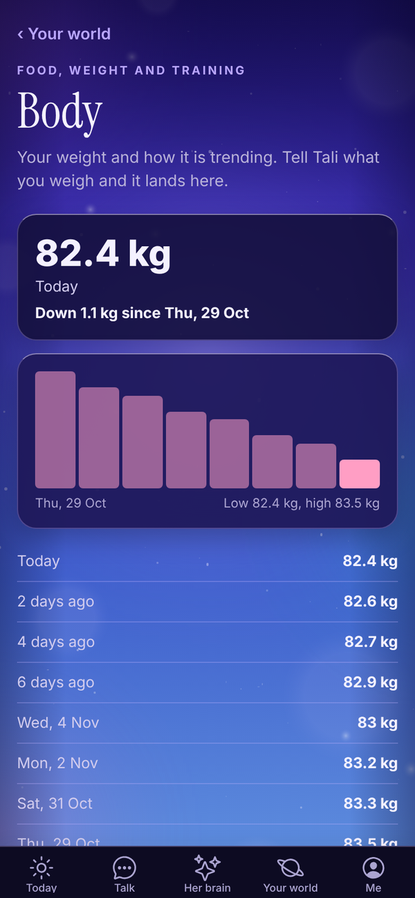
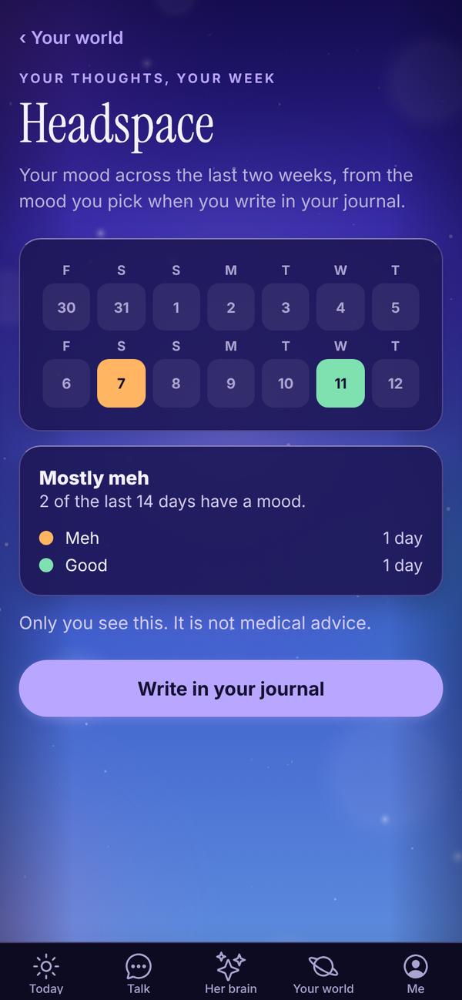

Tali HQ guide
Food, training, body and headspace
Log food, weight and workouts by telling Tali, see your weight trend on Body and your mood over a fortnight on Headspace.
Running a business is easier when you're looking after yourself. Tell Tali what you ate, what you weigh or that you trained, and she keeps it all on the Food and training screen. Rough is fine; she estimates. Free
Open it from Your world, Health, Food and training. A short version also sits on Today under More from Tali, Your day. Tap the Health chip on Today and it moves up to the top.


Log by chatting#
In Talk, just say it. For example:
- "Two eggs on toast and a flat white for breakfast."
- "82.4 this morning."
- "Did upper body today."
- "Write me a 3 day full body programme."
Tali logs it and says so in the line under the chat, like "food logged" or "programme saved". You can also send a photo of your plate or a menu and she logs it from that. See How Tali's replies work.
Food numbers are Tali's estimates from what you told her, so she says "about" and keeps them realistic. She gives general information only, never medical or diet advice.
The Food and training screen#
- Food: a day's food by meal (Breakfast, Lunch, Dinner, Snacks), with about how many calories and grams of protein, carbs and fat. Use the arrows next to the date to look at earlier days. Tap Delete on anything wrong.
- Weight: your latest weight and a small trend chart.
- Your training plan: the plan Tali wrote for you, one line per day of the week, with ticks on days you've trained this week. Today's day is highlighted. It shows how many sessions you've done out of your plan this week, and your streak in weeks.
- Done: tap the button with today's session (for example Done: Upper) to log it.
- This week: workouts you've logged this week. Tap Delete to remove one.
- Talk to Tali: opens Talk.
Your day on Today#
Under More from Tali on Today, Your day shows food today, your weight and today's training session, with Done to tick the session off.
Body#
Your world, Health, Body shows your weight and how it's trending, from the weigh ins you've told Tali. It shows your latest weight, the change since your first weigh in, and a chart.

With nothing logged yet, it says "No weigh ins yet." Try "I'm 82.4 kg this morning" in Talk. Tell Tali your weight opens Talk ready to go.
Headspace#
Your world, Health, Headspace shows your mood across the last two weeks, a day at a time. It comes only from the mood you pick under How was today when you write in your journal. Nothing is worked out or guessed. Days with no mood picked stay empty.

Write in your journal opens a new entry. Only you see this, and it is not medical advice.
Check ups#
Doctor, dentist, scripts and anything else for your body that comes round again live on the Check ups list under Health. See Your lists.
Questions#
Is Food and training on the Free plan?
Yes, on every plan. Logging through Talk uses a message (or a credit on paid plans) like any other chat.
How accurate are the calories?
They're Tali's estimates from what you told her. The more detail you give ("200g chicken breast"), the closer she gets.
Can I change my training plan?
Ask Tali in Talk, for example "change my plan to 4 days, upper and lower". She saves the new one over the old one.
I logged something twice.
Tap Delete on the extra one on the Food and training screen.
Does this connect to Apple Health or Health Connect?
No. Everything here comes from what you tell Tali.
Why is Headspace empty?
It only shows the mood you pick when you write a journal entry. Write one and pick How was today, and it shows up.